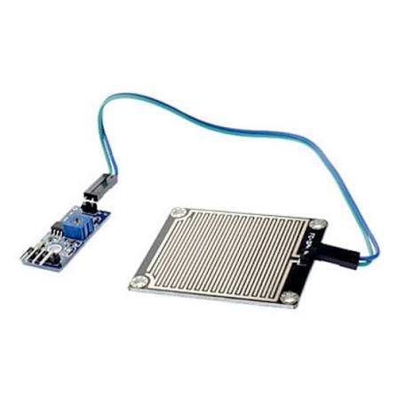

Sensor de Chuva
Categoria: Umidade / Clima
Conceito
Composto por uma placa de detecção revestida de níquel (para resistir à oxidação) e um módulo de controle. Ele é usado para medir o acúmulo de água ou simplesmente detectar a presença de gotas de chuva.
Princípio de Funcionamento
A placa possui trilhas de cobre expostas, paralelas e entrelaçadas, mas não conectadas. Quando o painel está seco, a resistência elétrica é muito alta (circuito aberto). Quando uma gota de chuva cai sobre a placa, a água (que conduz eletricidade) fecha o contato entre as trilhas, diminuindo a resistência. O comparador no módulo traduz essa queda de resistência em um sinal.
Principais Especificações Técnicas
- Tensão de operação: 3.3V a 5V DC
- Saída Dupla: Digital (D0) para limite ajustado, Analógica (A0) para intensidade da chuva.
- Sensibilidade: Ajustável via potenciômetro (trimpot) no módulo comparador.
- Chip comparador: LM393
Aplicações Industriais ou IoT
Estações meteorológicas autônomas, agricultura inteligente (desligar irrigação se já estiver chovendo), fechamento automático de claraboias ou janelas em fábricas/galpões.
Exemplo em um Projeto
Irrigação Inteligente: Um sistema IoT agrícola está programado para irrigar a plantação às 18h. No entanto, se o Sensor de Chuva detectar precipitação intensa às 17h, o controlador cancela a irrigação automática, economizando água e energia e evitando encharcar o solo.